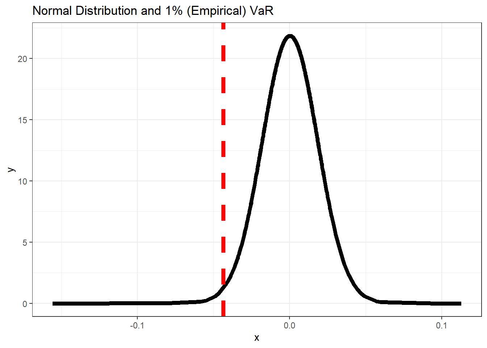

3.1 Value at Risk
- Value at Risk (VaR) is the most widely used market risk measure in financial risk management and it is also used by practitioners such as portfolio managers to account for future market risk. VaR can be defined as loss in market value of an asset over a given time period that is exceeded with a probability \(\theta\). For a time series of returns \(r_{t}\) , \(VaR_{t}\) would be such that
\[\begin{equation} P[r_{t}<-VaR_{t}[I_{t-1}]=\theta \tag{3.1} \end{equation}\]
where \(I_{t-1}\) represents the information set at time t-1.
- Despite the appealing simplicity of VaR in its offering of a simple summary of the downside risk of an asset portfolio, there is no single way to calculate it (see ?? ((???)) for an overview on VaR methods in finance).
1% VaR
# calculate normal density
den1_r = data_lm1$bhp
den1_bhp = dnorm(x = den1_r, mean = mean(den1_r), sd = sd(den1_r))
data_rd = data.frame(x = den1_r, y = den1_bhp)
# normal quantile
var1 = quantile(den1_r, 0.01)
p3 = ggplot(data_rd, aes(x = x, y = y)) + geom_line(size = 2) + geom_vline(xintercept = var1,
lty = 2, col = "red", size = 2) + theme_bw() + labs(title = "Normal Distribution and 1% (Empirical) VaR")
p3

Figure 3.1: 1% VaR
- In distribution terms, for a distribution F, VaR can be defined as its p-th quantile given by
\[\begin{equation} VaR_{p}(V_{p})=F^{-1}(1-p) \tag{3.2} \end{equation}\]
where \(F^{-1}\) is the inverse of the distribution function also called as the quantile function. Hence VaR is easy to calculate once a distribution for the return series can be defined.
- VaR is the q-th quantile of the distribution of over a time horizon t, which is a well accepted measure of risk in financial management.